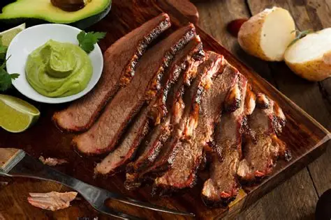
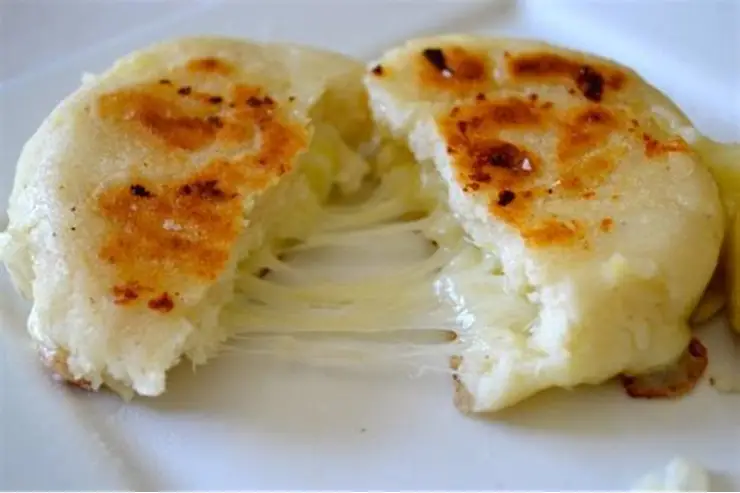

📍 Pompeya Alto, Meta • Vía Villavicencio - Puerto López

🍴 Restaurante El Castillo
Tradición artesanal, fogón a la leña y el auténtico sabor del Llano colombiano
Tradición artesanal, fogón a la leña y el auténtico sabor del Llano colombiano
Asados pacientes al calor de la leña nativa, cortes selectos de res y el auténtico sabor de nuestras llanuras.



En los Llanos Orientales, asar la mamona es una celebración. La carne se ensarta en varas largas de madera alrededor del fuego en círculo (el fogón), inclinadas de tal forma que reciban calor parejo sin quemarse con las llamas. Cada porción se corta caliente y se sirve con la hospitalidad característica del llanero.